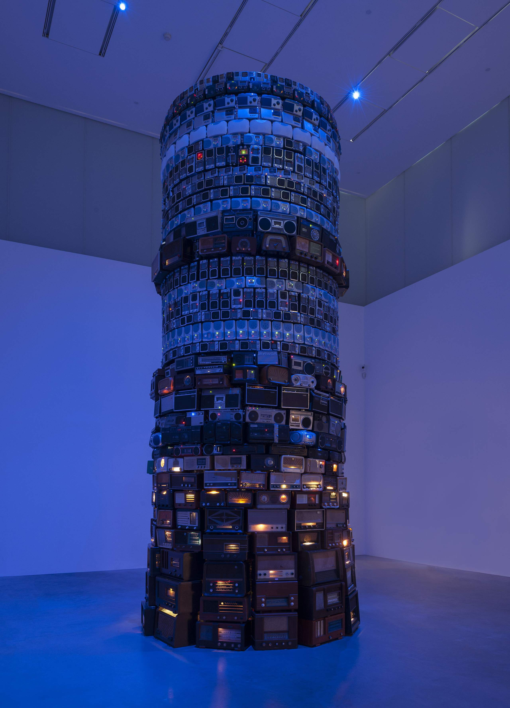

Nossa principal inspiração veio do mito bíblico e histórico da Torre de Babel, representando a ambição humana e a diversidade de línguas. Visualmente, buscamos referências em pinturas clássicas e arquiteturas em espiral.

O processo consistiu em empilhar os materiais de forma que a base fosse sólida, estreitando conforme a altura aumentava. Trabalhamos na colagem estrutural e no equilíbrio para garantir que a torre representasse fielmente a ideia de ascensão.
Como parte da personalização do grupo, listamos abaixo os horários em que cada integrante nasceu:
| Estudante | Horário de Nascimento |
|---|---|
| Adrian | 08:27 |
| Ana Julia | 17:34 |
| Bruno | 03:30 |
| Débora | 10:20 |
| Denis | 00:50 |
| Emanuelly | 00:00 |
| Erick | 10:51 |
| Iago | 23:00 |
| Leonardo Pereira | 23:30 |
| Leonardo Gabriel | 20:30 |
| Luan | 20:51 |
| Luana | 22:30 |
| Luiza | 08:25 |
| Lukas | 22:35 |
| Miguel | 22:00 |
| Tiago | 23:00 |
| Yohann | 19:50 |